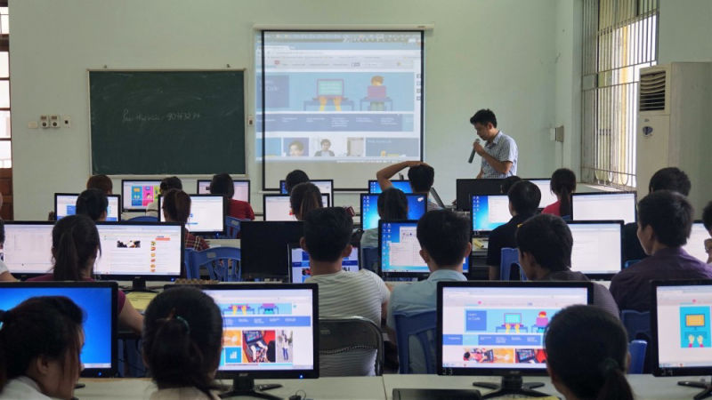
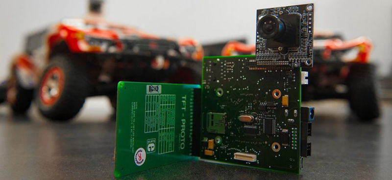

NGÀNH CÔNG NGHỆ THÔNG TIN GỒM NHỮNG CHUYÊN NGÀNH NÀO ?
TP.HCM, Sep 3, 2023
Công nghệ thông tin là ngành học được ưa chuộng và cũng đang
“khát” nhân lực.
 Công nghệ thông tin là ngành học, là định hướng nghề
nghiệp được
ưa chuộng.
Công nghệ thông tin là ngành học, là định hướng nghề
nghiệp được
ưa chuộng.
Ngành Công nghệ thông tin là gì?
Bạn quan tâm đến ngành công nghệ thông tin? Bạn hứng thú với công việc công nghệ thông tin? Vậy công nghệ thông tin là gì?Công nghệ thông tin tiếng anh là Information Technology (viết tắt là IT) là ngành khoa học kỹ thuật sử dụng máy tính và các phần mềm máy tính, mạng lưới internet để lưu trữ, bảo vệ xử lý, trao đổi, thu thập và sử dụng thông tin. Ngành CNTT sử dụng kỹ thuật máy tính và viễn thông để khai thác các nguồn tài nguyên thông tin giúp vận hành các hệ thống, dây chuyền sản xuất, kết nối với khách hàng trong các quá trình kinh doanh,…
Công nghệ thông tin (IT) sử dụng kỹ thuật máy tính và viễn thông
Bởi những ứng dụng vô cùng thiết thực với đời sống, nghề công nghệ thông tin hiện cần số lượng lớn nguồn nhân lực. Tuy nhiên công nghệ thông tin là ngành rộng, có rất nhiều chuyên ngành. Để giải đáp thông tin cho các em học sinh, sinh viên hay những người quan tâm đến công việc trong ngành công nghệ thông tin , dưới đây là những thông tin chi tiết trả lời cho câu hỏi công nghệ thông tin gồm những chuyên ngành nào.
Công nghệ thông tin gồm những chuyên ngành nào?

Công nghệ thông tin gồm những chuyên ngành nào?
Ngành CNTT gồm có rất nhiều chuyên ngành, nhưng phổ biến
nhất tại Việt Nam có 7 chuyên ngành dưới đây.
1. Khoa học máy tính
Ngành CNTT Khoa học máy tính có tên tiếng anh là Computer Science, đây là chuyên ngành
công nghệ thông tin chú trọng đào tạo các lý thuyết về thông tin và tính toán. Áp dụng các ứng
dụng của tính toán vào hệ thống máy tính để lý giải các chương trình máy tính.
Khoa học máy tính là ứng dụng các thuật toán vào các
chương trình máy tính
Học chuyên ngành khoa học máy tính, bạn sẽ có cơ hội công việc vô cùng rộng mở ở các vị trí
như:
- Lập trình viên thực hiện trên các nền tảng website/app
- Chuyên viên phân tích và thiết kế các sản phẩm thuộc công nghệ thông tin
- Xây dựng và phát triển các ứng dụng tin học
- Giảng dạy và nghiên cứu chuyên sâu về công nghệ thông tin,…
2. Mạng máy tính và truyền thông dữ liệu
Phát triển mạng máy tính và truyền thông dữ liệu
Với xu thế lấy mạng internet làm nền tảng kết nối mọi thứ, mạng máy tính và truyền thống dữ
liệu là chuyên ngành công nghệ thông tin đang phát triển mạnh. Với chuyên ngành này, người học
nghiên cứu cách thiết kế, các nguyên lý xây dựng mạng internet.
Vị trí công việc của chuyên ngành này như:
- Nhân viên kỹ thuật lắp đặt phần cứng của mạng
- Chuyên viên phát triển phần mềm và các ứng dụng của mạng internet
- Chuyên viên thiết kế mạng, phát triển quản trị mạng cho các tổ chức, đơn vị theo yêu cầu,…
3. Công nghệ phần mềm
Khi trả lời cho câu hỏi công nghệ thông tin gồm những chuyên ngành nào, thì
hẳn không thể không nhắc đến công nghệ phần mềm. Với tên tiếng Anh là Software Engineering, đây
là công việc thực hiện các lập trình phần mềm để phát triển hay bảo trì phát triển các phần mềm
cho chương trình, ứng dụng.
Kỹ sư phần mềm máy tính đảm nhiệm việc lập trình,
thiết kế các website, các app, game
Học chuyên ngành công nghệ phần mềm và trở thành các kỹ sư phần mềm, bạn có thể đảm nhiệm các
vị trí công việc vô cùng hấp dẫn như:
- Lập trình viên thiết kế website/các ứng dụng (app)/game
- Trở thành nhân viên công nghệ thông tin phát triển sản phẩm ở các công ty công nghệ, kỹ thuật
- Thực hiện sáng tạo các phần mềm của riêng mình;…c
4. Kỹ thuật máy tính

Kỹ thuật máy tính có chức năng thiết kế các mạch
điện tử cho các hệ thống, phần mềm
Chuyên ngành kỹ thuật máy tính thu hút những người yêu thích, đam mê việc phát triển hệ thống
phần cứng và phần mềm máy tính. Kỹ thuật máy tính là sự kết hợp của công nghệ thông tin với điện
tử, với chức năng cơ bản là thiết kế các mạch điện tử cho các hệ thống, các đồ điện
tử,…
Lựa chọn kỹ thuật máy tính, bạn sẽ có cơ hội việc làm hấp dẫn như trở thành:
- Kỹ sư điện tử – mạch điện
- Nhân viên công nghệ thông tin chịu trách nhiệm quản lý, tổ chức phần mềm
- Lập trình các con chip điện tử cho các đồ dùng gia dụng, thiết bị điện tử, di động, điều khiển phương tiện ô tô,…
5. Kỹ thuật mạng
Kỹ thuật mạng internet cần nguồn nhân lực cao
Sự phát triển của hệ thống mạng internet là bước tiến đột phá của công nghệ hiện đại. Điều này
thúc đẩy sự phát triển của các công việc chuyên ngành kỹ thuật mạng như thiết kế mạng, dịch vụ
mạng internet, an ninh mạng, quản trị mạng.
Công việc của nhân viên kỹ thuật mạng thường là:
- Kết nối đường truyền
- Đảm bảo cơ sở dữ liệu, hệ thống lưu trữ thông tin
- Bảo vệ an toàn, an ninh mạng,…
6. Hệ thống quản lý thông tin
Hệ thống quản lý thông tin áp dụng công nghệ thông
tin vào ứng dụng kinh doanh, quản lý sản xuất
Nhiều người khi nhắc đến công nghệ thông tin gồm những chuyên ngành nào thường bỏ sót hệ thống
quản lý thông tin (MIS). Không thuộc nhóm quản trị kinh doanh, hệ thống quản lý thông tin là
chuyên ngành công nghệ thông tin đặc thù được áp dụng trực tiếp vào quá trình kinh doanh, gắn
liền với các ngành kinh tế. MIS là công việc tổng hợp các dữ liệu thông tin theo nhu cầu của con
người, của doanh nghiệp như quá trình vận hành, sản xuất kinh doanh.
Học chuyên sâu về hệ thống quản lý thông tin, bạn sẽ làm tại các vị trí công việc như:
- Lập trình viên cơ sở dữ liệu
- Quản lý hệ thống cơ sở dữ liệu của các doanh nghiệp, công ty, tổ chức
- Đào tạo và kiểm định nghiệp vụ
7. Robot và Trí tuệ nhân tạo
Trí tuệ nhân tạo AI là ngành khoa học hiện đại, cần
thiết với các vị trí làm việc hấp dẫn
Trí tuệ nhân tạo hay AI lĩnh vực khoa học máy tính cung cấp kiến thức giúp con người lập trình
cho máy tính có các hành vi thông minh như con người.
Kỹ sư trí tuệ nhân tạo làm các công việc như:
- Huấn luyện máy tính thực hiện các nhiệm vụ dựa trên các dữ liệu và thuật toán
- Thu thập, phân tích và giải thích các bộ dữ liệu lớn, phức tạp
- Đưa ra xu hướng kinh doanh và thị trường,…
- Kỹ sư/chuyên viên phát triển ứng dụng AI vào phần mềm
- Phát triển hệ thống tự động hóa và robot
- Kiến trúc sư mảng dữ liệu,…
Ngành công nghệ thông tin là ngành học đa dạng, có kiến thức liên tục đổi mới cần sự cập nhật, vì vậy kiến thức được học tại trường chỉ là nền tảng giúp bạn tiếp cận với công việc. Để làm việc trong nghề công nghệ thông tin, khả năng tự học và thực hành rèn luyện kỹ năng là cần thiết để có những bước tiến vững chắc và gia tăng thu nhập.